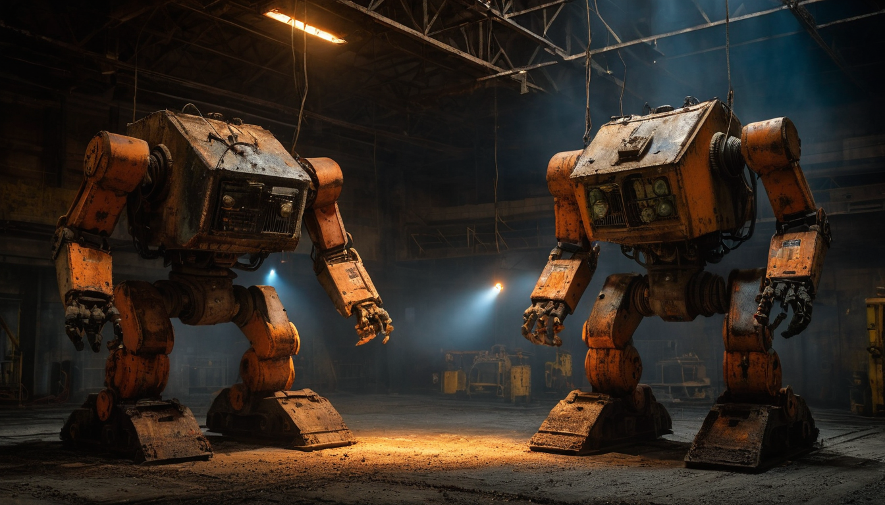
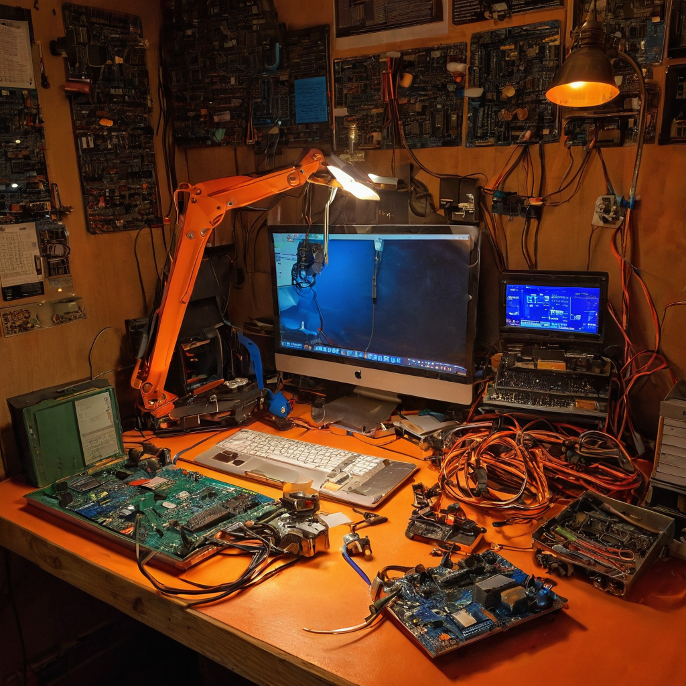

Elon Musk posted something short this week: "Robot fights are fun." A link. An emoji. That is it. Short enough to scroll past in half a second.
I did not scroll past.
@elonmusk shared a brief post on July 18, 2026, pointing to what appears to be robot combat footage. There is no product announcement, no detailed breakdown, no company framing. Just a casual observation from someone who actually builds robots and clearly found it worth sharing.
The brevity is part of why I saved it. People with deep skin in a field do not always flag things with long takes. Sometimes they just point.

Robot fighting is not a new thing. BattleBots has been a TV staple for years and the format has its own culture and fanbase. But the thing about robot combat in 2026 is that the hardware doing the fighting has gotten genuinely more capable, and the people watching have started paying attention to different questions.
Not just "which robot wins" but "what does it take to build a machine that takes a hit, stays oriented, and keeps moving?"
That question turns out to be very close to the questions you need to answer for any robot doing real work in the real world. Stress testing is hard to fake. Competition surfaces failure modes faster than controlled lab environments do, because competition is not controlled. Something is actively trying to break your machine, and your machine has to deal with that in real time.
A robot that can absorb unexpected force, recover its orientation, and keep functioning is doing several hard things at once: sensing its environment accurately under stress, maintaining balance and locomotion when conditions change, making fast decisions without clean data. Those are the same hard problems that matter for warehouse automation, construction, search and rescue, and the broader category of physical AI that is slowly moving from demo reel to actual deployment.
Combat is one of the fastest honest tests of where real-world robustness actually stands.
What it tests. Robot competition pushes hardware and software integration in ways polished demos never do. Mechanical durability under impact, sensor recovery after disruption, control loops under chaotic and adversarial conditions.
Who benefits from watching. Hardware builders, robotics engineers, anyone tracking the physical AI category. You learn more watching a robot fail in a fight than watching a product demo succeed on a smooth floor with good lighting.
What it reveals about the field. The gap between demo-ready and fight-ready is large. That gap is also roughly the gap between prototype and reliable deployed product. Competition narrows it faster than roadmaps do, because competition penalizes brittleness immediately.
What still needs work. Most dedicated combat robots are purpose-built for destruction rather than general capability. But the underlying engineering discipline is the same discipline you need for useful robots. And humanoid platforms are starting to appear in adversarial testing contexts, which is a newer signal worth tracking.
What I would watch next. Look at who is now sponsoring and seriously competing in robot combat and humanoid competition events compared to five years ago. The shift in who is showing up, and how well-funded they are, is a reasonable proxy for where serious hardware investment is actually pointing.
What I like about this bookmark is that it is honest about something people sometimes skip over: robots competing and robots working draw from the same engineering well. If a machine can stay functional while something is actively trying to break it, that is a meaningful capability signal, not just entertainment.
The fun is real. The useful information is real too. Those two things are not in conflict, and I think that is worth sitting with for a minute when you are tracking where physical AI is heading.
Robot combat events and humanoid competition formats are worth following as a low-noise signal on the actual state of physical AI hardware. Not for the spectacle, though the spectacle is genuinely good, but for what the failure modes and recovery behaviors reveal. That is where the real information is.
Source: X post by @elonmusk, https://x.com/i/web/status/2078521506007560474, retrieved 2026-07-18.
External references: No additional links were available from the source post. The linked content in the original post was not accessible for independent review.